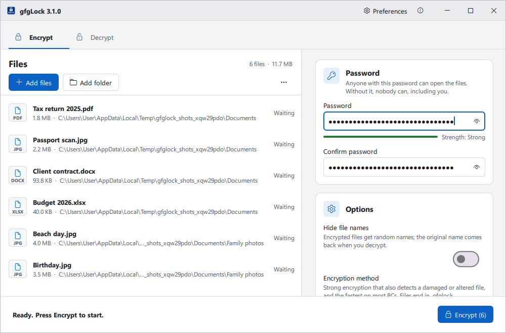
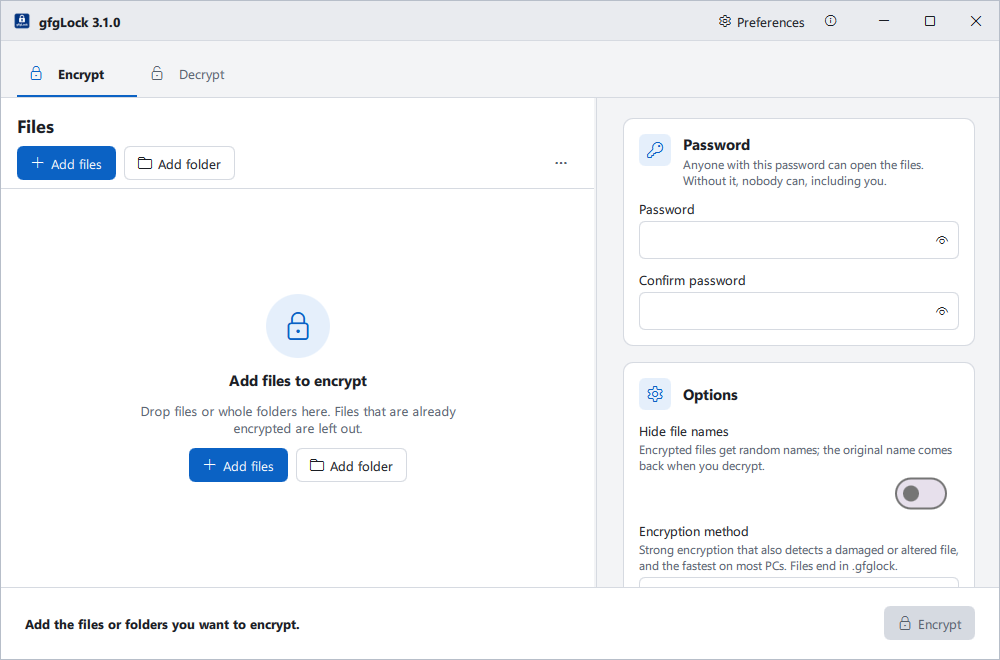
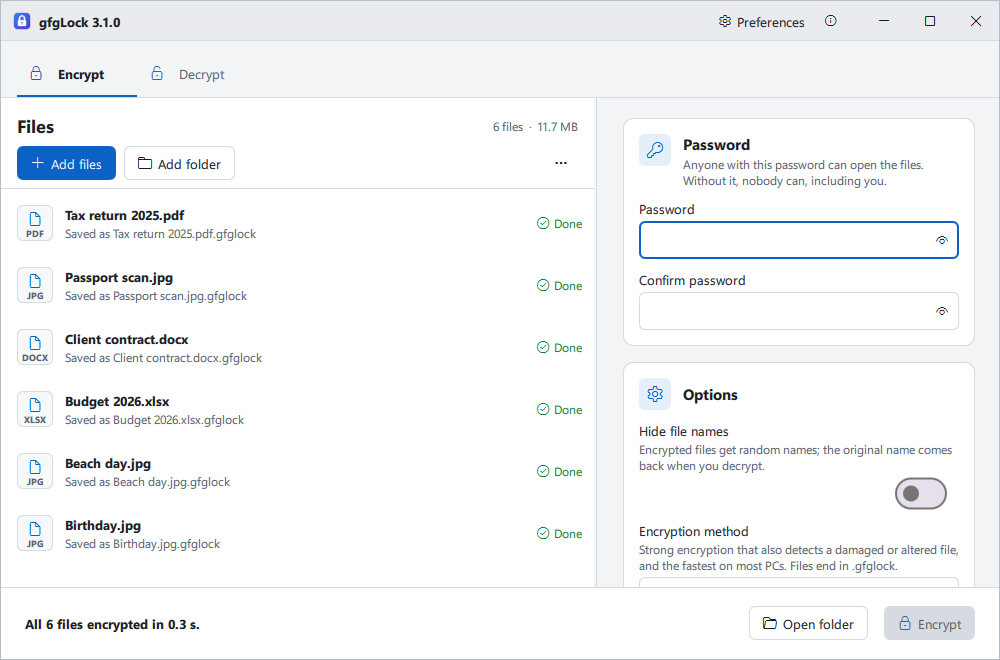
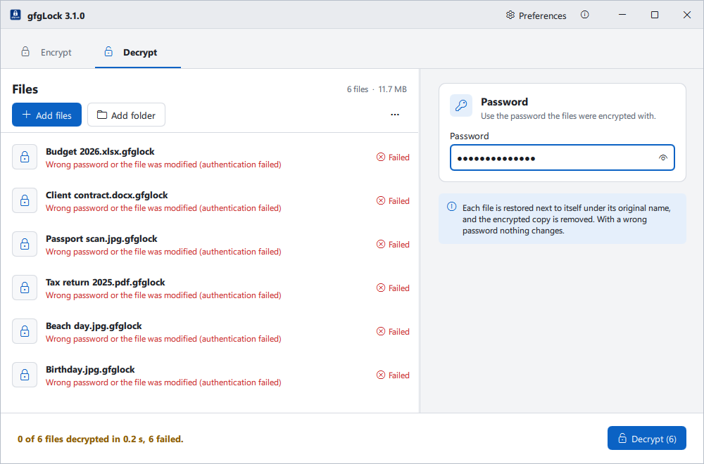
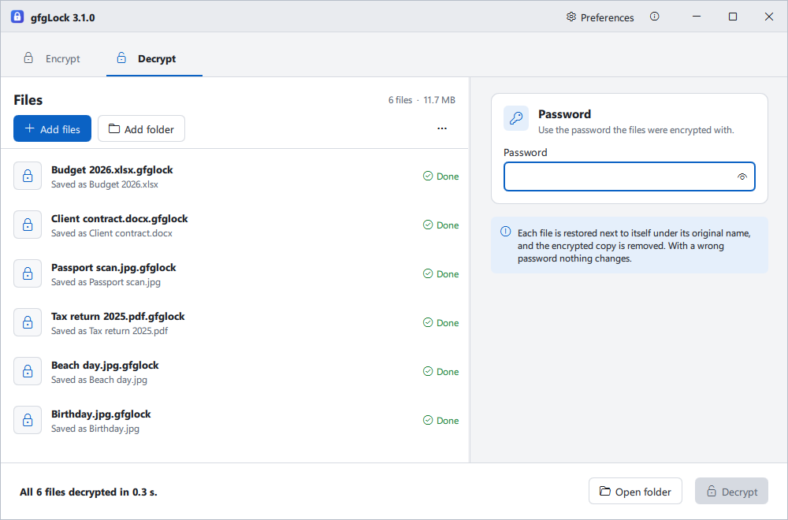
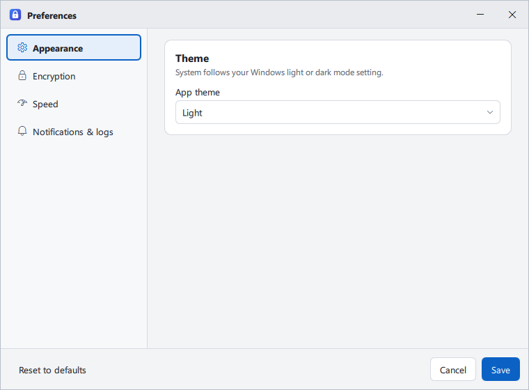
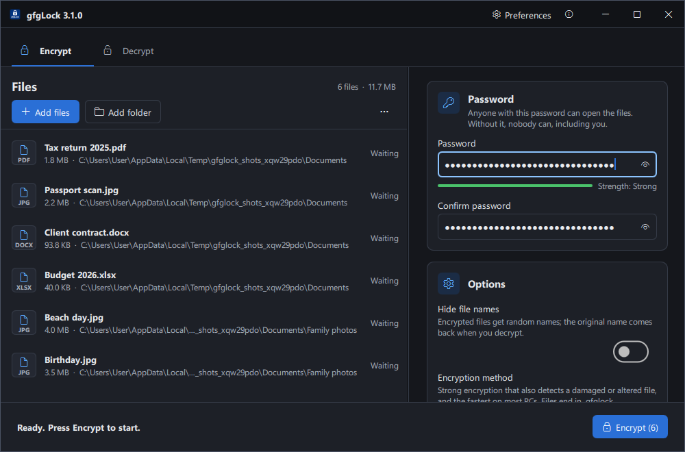
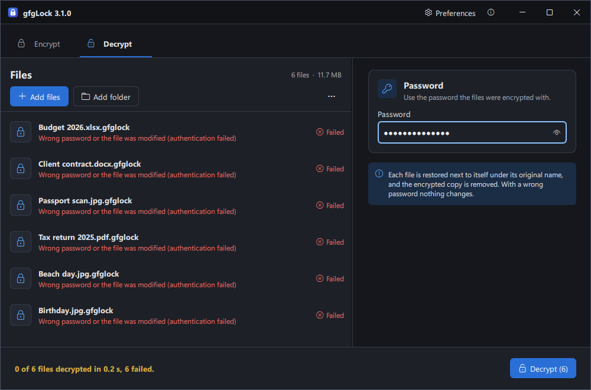

gfgLock
Free, open-source file encryption for Windows - offline, private, and built to last.


Free, open-source file encryption for Windows - offline, private, and built to last.


gfgLock is a free, open-source desktop app that encrypts and decrypts files using battle-tested cryptography - AES-256 GCM, AES-256 CFB, and ChaCha20-Poly1305 - all powered by a native C++ engine backed by OpenSSL. Drop files onto the window, enter a password, done. No account, no cloud, no subscription, no telemetry. Ever.
Your files. Your machine. Your rules.

gfgLock is for anyone who takes file privacy seriously without wanting to become a cryptography expert first:
If you've ever thought "I wish I could just lock this file" - this is for you.
Most encryption tools make you choose between complexity and trust. Either the UI is a maze, the algorithm is outdated, or the app needs a cloud account to function. gfgLock was built to close that gap.
.gfglock), AES-256 CFB (.gfglck), ChaCha20-Poly1305 (.gfgcha)%APPDATA%\gfgLock\logs\ (the portable exe: gfgLock data\logs\ beside it)winget install gfgRoyal.gfgLock
| Package | Admin Required | Best For |
|---|---|---|
gfgLock_3.1.0_system_installer.exe |
✅ | Shared / corporate machines |
gfgLock_3.1.0_user_installer.exe |
❌ | Personal machines - recommended |
gfgLock_3.1.0_portable.exe |
❌ | USB drives and PCs where you can't install; settings and logs stay in a gfgLock data folder beside the exe |
Compressed .7z archives for all three variants are also available on the Releases page.
To lock files
To open them again
| Shortcut | Action |
|---|---|
| Ctrl+1 / Ctrl+2 | Encrypt tab / Decrypt tab |
| Ctrl+O / Ctrl+Shift+O | Add files / add a folder |
| Enter in a password box, Ctrl+Enter, or F5 | Start |
| Esc | Stop a running job (files already being processed finish) or a folder scan |
| Ctrl+, / F1 | Preferences / About |
| Ctrl+A, Space, Ctrl+C, Delete in the list | Select all, select a file, copy the file names, remove from the list |
| Shift+F10 or the Menu key in the list | Show in folder, copy paths, and the other file actions |
| Ctrl+S / Esc in Preferences | Save / close without saving |
Encrypted files are saved in the same folder as the original under its full name plus the algorithm's extension (report.docx → report.docx.gfglock), and the original is removed only after the encrypted copy is completely written to disk. To decrypt, drop an encrypted file onto gfgLock - the algorithm is auto-detected from the extension, no configuration needed. Neither step ever overwrites an existing file: if the name is taken, the new file gets a suffix such as report (2).docx. Dropping a folder adds every file inside it, including subfolders; even folders with tens of thousands of files load in about a second.
| First launch | Ready to encrypt |
|---|---|
 |
| Encrypted | Wrong password |
|---|---|
 |
 |
| Decrypted | Preferences |
|---|---|
 |
 |
| Dark theme | Dark theme |
|---|---|
 |
 |
| Algorithm | Extension | Type | Recommended For |
|---|---|---|---|
| AES-256 GCM | .gfglock |
AEAD | ✅ General purpose - the safe default |
| AES-256 CFB | .gfglck |
Stream | Legacy: matching files made by older versions |
| ChaCha20-Poly1305 | .gfgcha |
AEAD | CPUs without AES-NI; timing-attack resistance |
Need strong, authenticated encryption?
→ AES-256 GCM (authenticated, hardware-accelerated, fastest on most PCs, recommended)
Need the same method as files made by older gfgLock versions?
→ AES-256 CFB (legacy; slower than GCM and can't detect a damaged or altered file)
Older hardware or need constant-time, timing-attack-resistant encryption?
→ ChaCha20-Poly1305 (AEAD, constant-time, no AES-NI required)
⚠️ Compatibility: Files encrypted with one algorithm cannot be decrypted with another. The algorithm is auto-detected on decryption from the file extension.
⚠️ Version notice: Files encrypted with v2.7.0 or earlier are not compatible with v2.7.5 or later due to a file-structure change.
Your password is never stored or transmitted anywhere. A unique encryption key is derived fresh for every single operation:
Password (UTF-8) + random 16-byte salt
↓
PBKDF2-HMAC-SHA256 (200 000 iterations)
↓
256-bit encryption key
Open Preferences from the title bar (Ctrl+,). Changes apply when you press Save; Reset to defaults asks before restoring everything.
| Setting | Description |
|---|---|
| App theme | System (follows your Windows light or dark mode), Light, or Dark |
| Setting | Description |
|---|---|
| Encryption method | The method the Encrypt tab starts with; each option explains its trade-offs. Decrypting picks the right method automatically |
| Hide file names | Give encrypted files random names by default; the original name comes back when you decrypt |
| Setting | Description |
|---|---|
| Files at a time | How many files are encrypted or decrypted at once, set separately for each (1 up to your processor threads). Each file is already read, encrypted, and written at the same time, so this mostly speeds up batches of smaller files |
| Keep the PC responsive | Leave one processor thread free for Windows (on by default; turn off to use every thread) |
| Read size | How much of a file is read at once, set separately for encrypting and decrypting. The Default (4 MB) suits most PCs; 1 MB to 64 MB can be picked by hand. Each file being worked on holds about four times the size in memory |
| Optimize for this PC | Encrypts and decrypts a 256 MB test file in the temp folder with every read size (about a minute, with a progress bar), then selects and saves the fastest size for encrypting and for decrypting. Another size replaces the default only when it is at least 5% faster |
| Setting | Description |
|---|---|
| Notify when finished | Show a Windows notification when encrypting or decrypting ends |
| Keep logs / What to log | Write log files with errors only, or every file processed. Logs list file names, never passwords |
| Open logs folder / Clear logs | Show the log files in File Explorer, or empty them |
# 1. Clone the repository
git clone https://github.com/ShahFaisalGfG/gfgLock.git
cd gfgLock
# 2. Create and activate a virtual environment
python -m venv .venv
.venv\Scripts\Activate.ps1
# 3. Install Python dependencies
pip install -r requirements.txt
# 4. Run directly (no native build required)
python -m gfglock
.\scripts\build.ps1
This single script runs scripts\build_native.ps1 (bootstraps vcpkg, installs OpenSSL through it, and builds the CMake project), then PyInstaller bundling, Inno Setup compilation, and the portable exe. Each build runs the app's --self-test before it counts as done. The installers land in build\installer\ and the portable exe in build\. See dev_setup.md for the individual scripts.
First-run note: vcpkg will clone from GitHub and download OpenSSL - internet access is required for the first build only.
| Issue | Solution |
|---|---|
| "Could not parse stylesheet" warning | Harmless Qt startup message - no data loss, safe to ignore |
| A file is marked Failed | Its row says why. "Wrong password or the file was modified" means the password is wrong or the file was damaged; correct the password and press Decrypt again. Nothing is changed when a file fails |
| A file I added isn't in the list | The Encrypt tab leaves out files that are already encrypted, and the Decrypt tab leaves out files that aren't; a notice says how many. Use the other tab for them |
| Slow performance | For many small files, raise Files at a time in Preferences → Speed. A single large file goes about as fast as the disk allows; close background apps that use the same disk |
| Context menu not appearing | Re-run the installer; use Run as administrator for the system installer |
| Logs not created | Turn on Keep logs in Preferences → Notifications & logs; check write permissions on %APPDATA%\gfgLock\logs\ (portable exe: gfgLock data\logs\ beside it) |
Still stuck? Open an issue with your log file and gfgLock version - I'll get back to you.
Contributions of all kinds are welcome - bug reports, fixes, new features, translations, or just improving a sentence in the docs.
git checkout -b feature/your-featurepyright passes on all edited Python filesqmllint passes on all edited .qml filesdevelopment branchFor significant changes, please open an issue first to discuss the approach - it saves time for everyone and increases the chance your PR gets merged quickly.
Not sure where to start? Look for issues tagged good first issue.
| Version | Planned Feature |
|---|---|
| v3.2.0 | Local Password Wallet |
| v3.3.0 | File integrity verification (SHA-256 checksums) |
| v3.4.0 | Resumable / pause-and-continue for large file operations |
| v4.0.0 | Cloud-encrypted password backup |
Have a feature idea or a use case we haven't thought of? Start a discussion - feature requests that get traction move up the roadmap.
report.docx, report.pdf) were both encrypted to report.gfglock, so one original was lost. Encrypted files now keep the full original name, and no operation ever overwrites an existing file.NUL, or into a hidden NTFS stream.résumé.txt) failed to encrypt on the native path, and names like café.txt were restored garbled.A.GFGLOCK could delete it; dropping a folder added the folder itself instead of its files.--self-test (native engine, all algorithms on both the native and Python paths, every QML screen, and every image the app shows), so a missing module or DLL fails the build instead of reaching users. The test suite and the QML linter also run on every push and pull request, and builds use pinned Python packages and a pinned vcpkg commit (OpenSSL 3.6.5), so a release can be rebuilt as it shipped.cryptography, so future cryptography releases keep opening .gfglck files.%APPDATA%\gfgLock folder (which held other users' per-user installs and settings), and uninstalling never deletes other files in the install folder. Explorer refreshes file icons after install, and THIRD_PARTY_NOTICES.md and the offline readme are installed under docs.gfgLock data folder beside itself instead of in %APPDATA%, and takes over the settings of an earlier version on its first start. On a drive it can't write to, it falls back to %APPDATA%\gfgLock.LICENSE file, which the readme linked to, is now included.gfglock_native) now exposes API version 4; an outdated module is ignored in favour of the Python fallback. Files from earlier versions decrypt unchanged.pytest coverage - native path, Python fallback, and cross-path round-trip compatibilityscripts/build_native.ps1 automates MSVC + vcpkg + CMake compilation in one commandscripts/scripts/build.ps1 one-command installer buildReleased under the MIT License - free to use, modify, and distribute.
Built with ❤️ by Shah Faisal · Portfolio · shahfaisalgfg@gmail.com
gfgLock is free and will always stay free. If it's saved you time, protected a file that mattered, or just made your workflow a little smoother, here are a few ways to give back:
Stay secure. Encrypt responsibly. 🔐